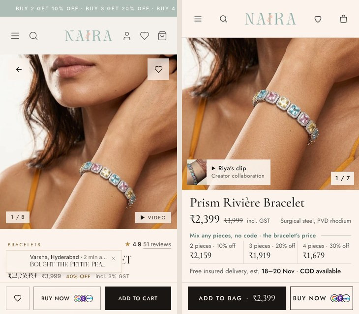
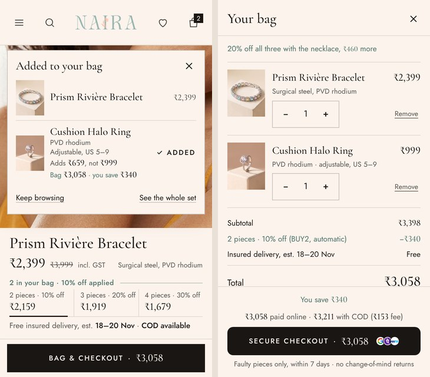
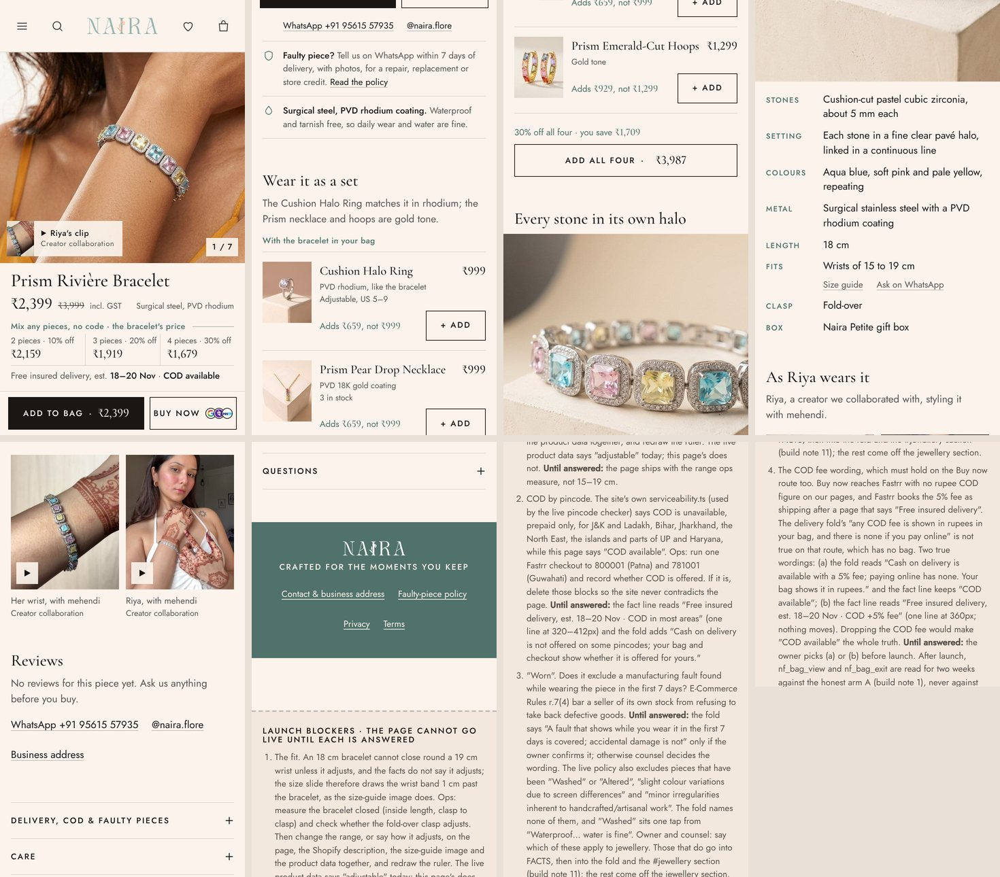

Naira · product page proposal · 13 November 2026
The proposed product page for the Prism Rivière Bracelet. It was built on the real photos, prices and offer, then scored and rebuilt in six rounds against an evidence-based rubric by four independent critics, until each round added less than a tenth of a point. Every line on it can be checked.
Best opened on a phone. Every button works: swipe the photos, add to bag, add the ring from the card, open the bag. The launch notes for the developer sit below its footer.
The first screen
Designed at 360×640, the Instagram browser on an Android phone, where half of your shoppers arrive. Today that screen shows the photo, an invented review score, a made-up "just bought" card over the name, and the price. The offer, delivery, COD and the in-page Add to cart sit below it.


Why it is built this way
Price, the Buy 2/3/4 prices, delivery date and COD all sit above the buy bar, which shows from the first moment and never covers them.
91% of your product-page views end without an add (Meta pixel, 28 days). Baymard: 64% look for delivery cost on the product page.
Out: the 4.9 / 51 reviews (written in the code), "5 sold in 48 hours" (computed from the product name), the random buyer card, the press logos and "Sale live today".
India's 2023 dark-pattern guidelines list false popularity and false urgency; BIS IS 19000:2022 covers review honesty.
"2 pieces ₹2,159 · 3 pieces ₹1,919 · 4 pieces ₹1,679", applied automatically. The caption follows the bag: "1 in your bag · a second piece takes 10% off".
68–74% of orders are one piece; AOV is ₹1,511 against ₹979 of ad cost per order. Those who buy 2+ already use the ladder.
Right after the add, one card offers the ring that matches in rhodium, with its real cost after the discount. The set section adds pieces with one tap and a running total.
Missoma, GIVA and Salty all cross-sell at the add; Baymard asks for a full name, price and image on every cross-sell.
"COD available" on the first screen. The bag shows both totals in rupees: "₹3,058 paid online · ₹3,211 with COD (₹153 fee)".
COD is 45% of orders and 21% of COD orders come back undelivered, against about 1% prepaid.
"Faulty piece? Tell us on WhatsApp within 7 days of delivery, with photos, for a repair, replacement or store credit." The live page promises returns the policy does not give.
Baymard: 60% of shoppers look for the return policy on the product page; 15% have abandoned over it.
Riya's clip is cut to the 3.3 seconds that make no unsupported claim (her full reel mentions a "two years plating guarantee") and labelled "Creator collaboration".
ASCI influencer rules; Meta's landing-page study asks for lifestyle shots and video in the gallery.
18 cm, wrists 15–19 cm, cushion-cut cubic zirconia about 5 mm, PVD rhodium on surgical steel, fold-over clasp, gift box. No "skin-friendly", no "zircone", no "Demi-Gold".
Mejuri, Missoma and Astrid & Miyu win trust with millimetres and grams, not adjectives.
Two typefaces (Cormorant Garamond and Jost) instead of four. No "40% OFF" badge, no ticker, no icons where words do the job. Sharp corners as the brand requires.
The art-direction critic scored it 9.0, against 5.3 in round one.
The first photo loads first; everything below the screen waits. The video loads only when tapped. No layout shift; zero accessibility violations (axe-core) in every state.
Deloitte/Google: 0.1 s faster gave 8.4% more retail conversions. The live page loads 37 of 38 images and a 3.4 MB video at once.
How it got here
The rubric has 21 weighted criteria. They come from Baymard Institute product-page research, Nielsen Norman Group, Spiegel Research Center's review studies, Meta's landing-page study and web.dev's speed case studies. Weights follow where your funnel leaks. Each round, a conversion specialist, a first-time Instagram shopper paired with a consumer-law reviewer, a luxury art director and a mobile and speed engineer scored the page from fresh renders. A builder then applied their fixes.
| Round | Conversion | Trust & law | Art direction | Mobile & speed | Average | Progress |
|---|---|---|---|---|---|---|
| 1 · first draft | 4.6 | 4.7 | 5.3 | 4.9 | 4.9 | |
| 2 | 8.0 | 7.8 | 7.8 | 7.9 | 7.9 | |
| 3 | 8.5 | 8.3 | 8.5 | 8.3 | 8.4 | |
| 4 | 8.8 | 8.7 | 8.8 | 8.7 | 8.75 | |
| 5 | 8.9 | 8.8 | 8.9 | 8.8 | 8.85 | |
| 6 · final | 8.9 | 8.8 | 9.0 | 9.0 | 8.93 |
The last round added 0.08, so further design rounds would not move the score much. The critics put the same page at 9.3 to 9.5 once the inputs below exist. The "3.5" for the live page is a rough read from the rubric's calibration column, not a full scoring.

From 9 to 9.5 and beyond
utm_content, so the page can open on the same photo and promise as the ad that was tapped.Before it can go live
Each one is written out in full in the prototype's launch notes, with the wording to use either way.
How it ships
An honest baseline on every jewellery page: remove the authored reviews and rating, the sold counts, the buyer pop-up, the press strip, "Sale live today", "Skin-friendly", "zircone" and "Demi-Gold", and the returns promise the policy does not give. This is the fair "A" for the test.
The new page in JewelDetailNext and the bag in CartDrawerNext: the first-screen column, the sticky bar's states, the after-add card, the set with one tap, the honest proof sections, live stock from Shopify (today nothing reads inventory), structured data without fake ratings, and the tracking events. Tested at 320, 360 and 412 px.
An A/B test: each visitor is put in arm A or B from their existing visitor ID. Primary measures are add to cart per product-page view and checkout starts per add, which your traffic can read within about a week. Orders by arm are read from Shopify. The offer stays fixed while it runs. It changed four times in the last 30 days, which is why its effect could not be measured.
Add the inputs above as they arrive (reviews, photos, video, the ad map), then roll the winner out to every jewellery page. The design is not specific to this bracelet: every piece gets the same page.
The live code is checked out and its tests run (989 pass; the one failure is in reels and predates this work). Building it into the site needs a new branch from the live code and your go-ahead.
Sources